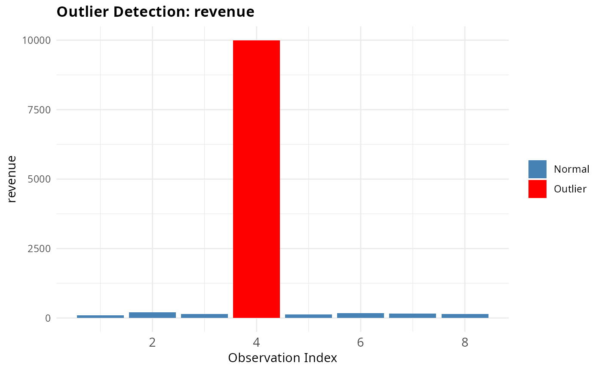

Plot Outliers in a Numeric Column
plot_outliers.RdGenerates a ggplot2 bar chart for a numeric column from a data frame,
highlighting flagged outlier bars in red. Outliers are detected using
flag_outliers() and colored differently for easy visual identification.
Arguments
- df
A data frame containing the column to plot.
- column
A single character string specifying the name of the numeric column in
dfto visualize.- method
A single character string specifying the outlier detection method. Either
"iqr"(default) or"zscore".- threshold
A single numeric value controlling outlier sensitivity. For
"iqr", this is the IQR multiplier (default1.5). For"zscore", this is the z-score cutoff (default3).- title
A single character string for the plot title. Defaults to
"Outlier Detection: <column>".
Value
A ggplot2 object displaying a bar chart of the specified
column with outlier bars highlighted in red and normal bars in steelblue.
Examples
df <- data.frame(revenue = c(100, 200, 150, 10000, 130, 170, 160, 140))
plot_outliers(df, column = "revenue")
 plot_outliers(df, column = "revenue", method = "zscore", threshold = 2)
plot_outliers(df, column = "revenue", method = "zscore", threshold = 2)
